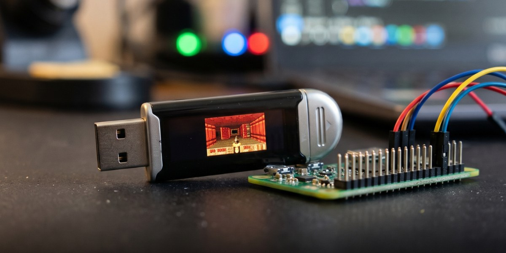

Geekotidien · Édition du 19 novembre 2026
Doom sur clé USB
Un développeur exploite le micrologiciel d'une puce dont le marquage avait été effacé

Le développeur Aaron Christophel fait tourner Doom sur le petit écran LCD couleur d'une clé USB. Une démonstration filmée le montre, dans un article de Génération NT publié le 17 novembre 2026.
Pour y arriver, il a exploité un port de débogage afin d'extraire le micrologiciel d'une puce dont le marquage avait été effacé. Il a ensuite utilisé des modèles d'IA pour l'aider à rétro-concevoir le matériel.
Le jeu se contrôle par des transferts de fichiers : le micrologiciel modifié interprète ces fichiers comme des commandes. L'article ne donne aucun chiffre précis sur la résolution ni sur les performances.
La vidéo de démontage d'Aaron Christophel, intégrée à l'article, constitue la source d'origine. L'article ne précise pas si la manipulation a été reproduite par d'autres.
Le + : Le contrôle du jeu passe uniquement par des transferts de fichiers, sans interface prévue pour un jeu.